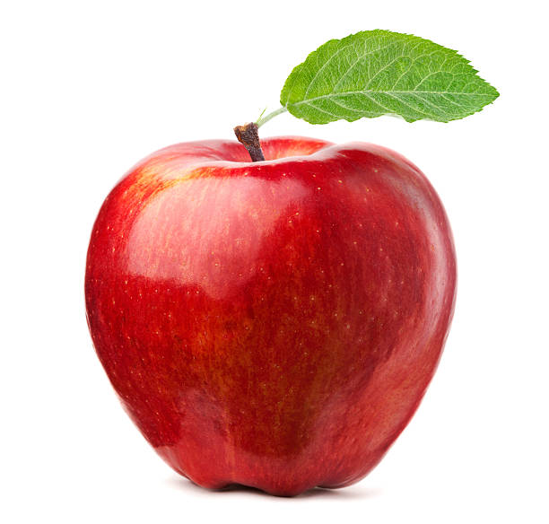
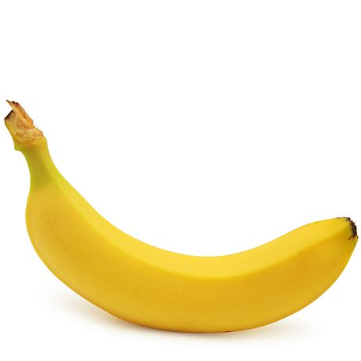

Welcome to Fruits website!
Apple
An apple is a sweet, edible fruit produced by an apple tree (Malus pumila). Apple trees are cultivated worldwide, and are the most widely grown species in the genus Malus. The tree originated in Central Asia, where its wild ancestor, Malus sieversii, is still found today. Apples have been grown for thousands of years in Asia and Europe, and were brought to North America by European colonists. Apples have religious and mythological significance in many cultures, including Norse, Greek and European Christian traditions.
Banana
A banana is an edible fruit – botanically a berry – produced by several kinds of large herbaceous flowering plants in the genus Musa. In some countries, bananas used for cooking may be called plantains, distinguishing them from dessert bananas. The fruit is variable in size, color, and firmness, but is usually elongated and curved, with soft flesh rich in starch covered with a rind, which may be green, yellow, red, purple, or brown when ripe. The fruits grow in clusters hanging from the top of the plant. Almost all modern edible parthenocarpic (seedless) bananas come from two wild species – Musa acuminata and Musa balbisiana. The scientific names of most cultivated bananas are Musa acuminata, Musa balbisiana, and Musa × paradisiaca for the hybrid Musa acuminata × M. balbisiana, depending on their genomic constitution. The old scientific name Musa sapientum is no longer used.

Orange
The orange is the fruit of the citrus species Citrus × sinensis in the family Rutaceae. It is also called sweet orange, to distinguish it from the related Citrus × aurantium, referred to as bitter orange. The sweet orange reproduces asexually (apomixis through nucellar embryony); varieties of sweet orange arise through mutations.
The orange is a hybrid between pomelo (Citrus maxima) and mandarin (Citrus reticulata). The chloroplast genome, and therefore the maternal line, is that of pomelo. The sweet orange has had its full genome sequenced.
Sweet oranges were mentioned in Chinese literature in 314 BC. As of 1987, orange trees were found to be the most cultivated fruit tree in the world. Orange trees are widely grown in tropical and subtropical climates for their sweet fruit. The fruit of the orange tree can be eaten fresh, or processed for its juice or fragrant peel. As of 2012, sweet oranges accounted for approximately 70% of citrus production.
In 2014, 70.9 million tonnes of oranges were grown worldwide, with Brazil producing 24% of the world total followed by China and India.
Peach

The peach (Prunus persica) is a deciduous tree native to the region of Northwest China between the Tarim Basin and the north slopes of the Kunlun Mountains, where it was first domesticated and cultivated. It bears an edible juicy fruit called a peach or a nectarine.
The specific epithet persica refers to its widespread cultivation in Persia (modern-day Iran), whence it was transplanted to Europe. It belongs to the genus Prunus which includes the cherry, apricot, almond and plum, in the rose family. The peach is classified with the almond in the subgenus Amygdalus, distinguished from the other subgenera by the corrugated seed shell.